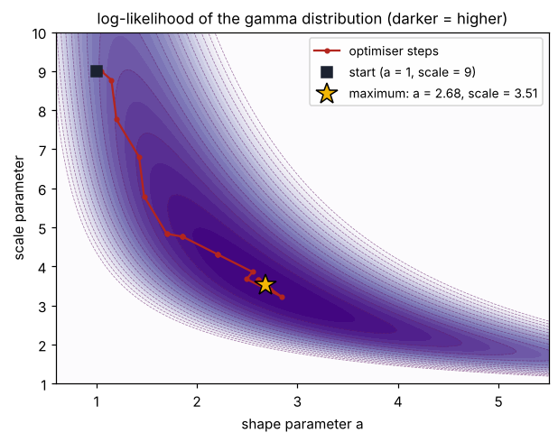
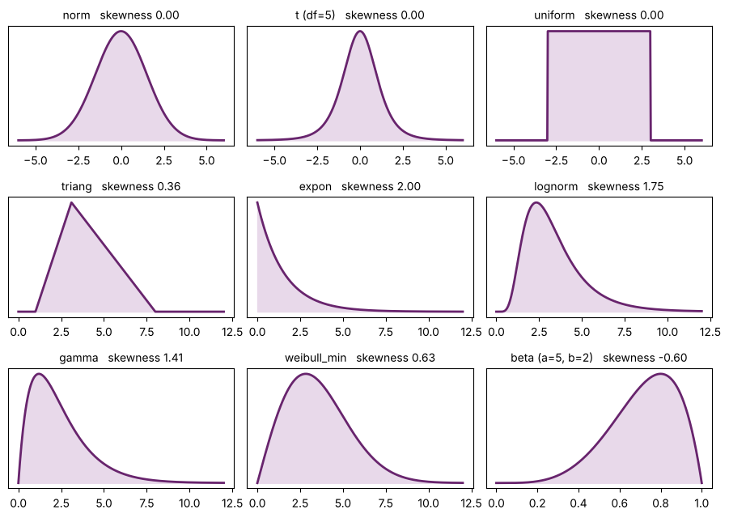
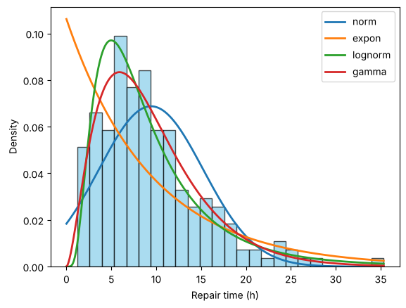
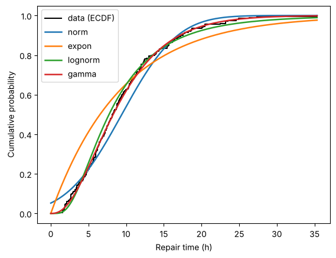
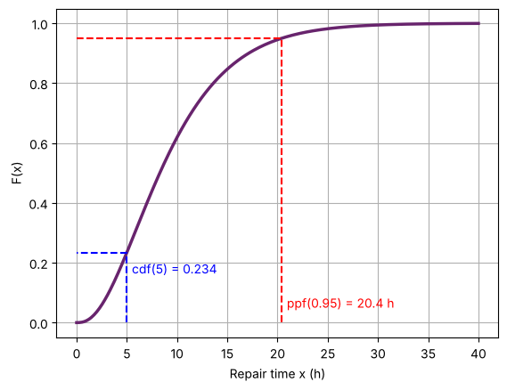
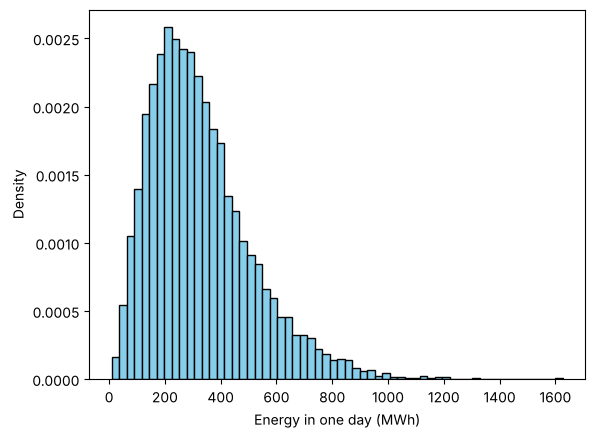
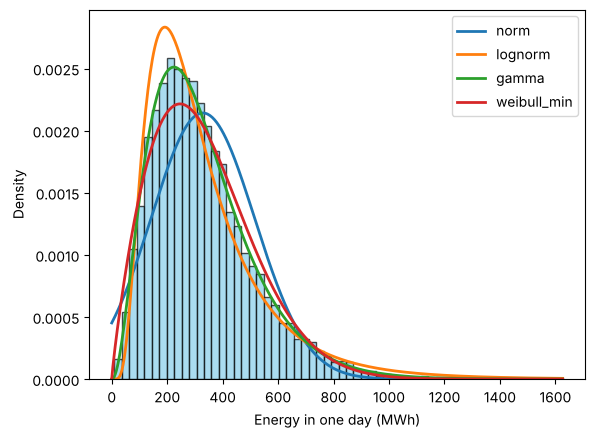
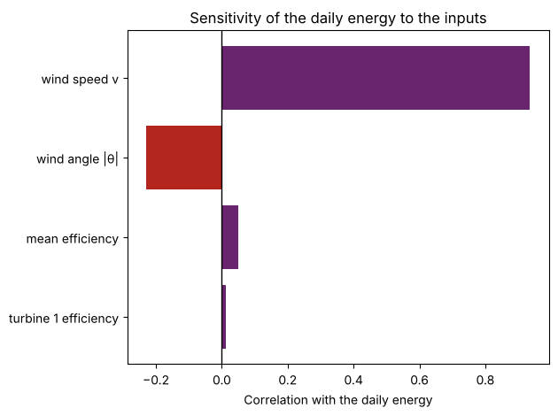

PART A
Fitting distributions to data
Last week we described the results of a Monte Carlo simulation with histograms and statistics. This week we go one step further: we find a known, smooth probability distribution that describes the results, and we test how well it fits. The interactive versions of the figures (the likelihood, the distribution gallery, the Kolmogorov–Smirnov test and the CDF reader) are in the lecture slides.
1Reading the results of a simulation
Monte Carlo simulation is useful for problems that involve uncertainty or randomness, that have no analytical solution (or a very complex one), or that need a risk assessment or probabilistic analysis. After running a large number of simulations, typically 1 000 to 100 000, we interpret the results in terms of:
- Expected value, the mean \(\bar{x}\) or the median \(\tilde{x}\): the best guess for the output. When the outputs are (almost) normally distributed the mean is a good representative; when there are outliers or the distribution is heavily skewed, the median is better.
- Standard deviation, the spread of the outputs and a measure of the uncertainty: \(\sigma = \sqrt{\frac{1}{N}\sum (x_i - \bar{x})^2}\).
- Histograms: the visual distribution of the outcomes.
- A fitted probability distribution: a known distribution that describes the results, which helps further analysis.
- The probability of exceeding a threshold: the likelihood of failure or of exceeding a limit, which needs the cumulative distribution function of the outputs.
Histograms, in their ordinary or cumulative form, are discrete: bars over bins, not continuous functions. That makes some questions awkward. For example, a histogram cannot give the probability of a value outside the range of the observed data: it simply has no bars there.
Distribution fitting finds a known probability distribution (normal, gamma, beta, …) and the parameters that make it match the data best. A fitted distribution describes thousands of results with two or three numbers, answers probability questions anywhere, including beyond the data, and can be reused as an input to another simulation. Two common engineering uses: fitting distributions to real data to define the inputs of a Monte Carlo simulation, and fitting distributions to the outputs to analyse them.
2Distribution fitting and maximum likelihood
Fitting has two parts: choose a family of distributions (the shape: normal, gamma, lognormal, …), then estimate its parameters from the data. We then check the goodness of fit (section 4) and use the best candidate. The standard method for the parameters is maximum likelihood estimation (MLE).
2.1 The likelihood function
Suppose we observe a dataset \(x_1, x_2, \dots, x_n\) and assume the observations are drawn independently from a distribution with an unknown parameter vector \(\theta = (\theta_1, \theta_2, \dots, \theta_k)\) and probability density function \(f(x \mid \theta)\). The likelihood function is the joint probability density of observing all the data points for given parameters:
Graphically: draw the density curve, read its height at every data point, and multiply the heights. Parameters that put the curve over the data give large heights and a large likelihood. The goal of maximum likelihood estimation is to find the parameter vector that maximises it:
2.2 The log-likelihood
The product of many small densities becomes extremely small (for eight data points it is already about \(10^{-7}\); for thousands it underflows to zero on a computer), so we take the natural logarithm and work with the log-likelihood:
The logarithm is a monotonically increasing function, so maximising \(\ell(\theta)\) is equivalent to maximising \(L(\theta)\): \(\hat{\theta} = \arg\max_{\theta}\ \ell(\theta)\). To find the maximum, take the partial derivative with respect to each parameter and set it to zero:
Solving this system gives the maximum likelihood estimators.
Example: the normal distribution. With parameters \(\mu\) and \(\sigma\), the probability density function is
and the log-likelihood for \(n\) observations is
Differentiating with respect to \(\mu\):
Differentiating with respect to \(\sigma\) and solving gives
The MLEs of the normal distribution are the sample mean and the standard deviation dividing by \(n\), which is what np.mean and np.std calculate.
Check it numerically: the log-likelihood at the MLE is higher than at any other parameters.
import numpy as np
x = np.array([4.1, 5.0, 5.6, 6.2, 6.4, 7.1, 7.8, 9.0])
def log_likelihood(mu, sigma):
pdf = np.exp(-(x - mu)**2 / (2 * sigma**2)) / (np.sqrt(2 * np.pi) * sigma)
return np.sum(np.log(pdf))
mu_hat, sigma_hat = np.mean(x), np.std(x)
print("MLE: mu = %.3f, sigma = %.3f, log-likelihood = %.3f" % (mu_hat, sigma_hat, log_likelihood(mu_hat, sigma_hat)))
for mu, sigma in [(6.0, 1.46), (6.4, 2.0), (5.0, 1.0)]:
print("mu = %.2f, sigma = %.2f: log-likelihood = %.3f" % (mu, sigma, log_likelihood(mu, sigma)))MLE: mu = 6.400, sigma = 1.464, log-likelihood = -14.399 mu = 6.00, sigma = 1.46: log-likelihood = -14.700 mu = 6.40, sigma = 2.00: log-likelihood = -15.039 mu = 5.00, sigma = 1.00: log-likelihood = -23.762
2.3 Computational fitting
For the normal distribution the equations can be solved by hand. For most other families (gamma, beta, Weibull, …) the equations \(\partial \ell / \partial \theta_j = 0\) have no closed-form solution, so the computer solves the maximisation numerically. Think of \(\ell(\theta)\) as a landscape over the parameter space. A numerical optimiser starts from a guess, evaluates \(\ell\), moves the parameters in the direction that increases it, and repeats until \(\ell\) stops increasing: the top of the hill is \(\hat{\theta}\).

SciPy’s dist.fit(data) does exactly this: maximum likelihood with a numerical optimiser. Fixing a parameter you already know, for example floc=0 for data that start at zero, makes the search easier and more reliable.
A quicker alternative is the method of moments: choose the parameters so that the mean and variance of the distribution equal those of the data. For the gamma distribution, mean \(= a \cdot \text{scale}\) and variance \(= a \cdot \text{scale}^2\), so \(\text{scale} = s^2/\bar{x}\) and \(a = \bar{x}^2/s^2\). It is simple, and a useful starting guess, but usually less accurate than MLE.
3Common distributions in scipy.stats
The module scipy.stats contains about a hundred distributions. Every one has a location loc and a scale; some also have shape parameters. The ones you will use most:
| SciPy name | Parameters | Support | Shape |
|---|---|---|---|
norm | loc = μ, scale = σ | −∞ to +∞ | symmetric |
t | df, loc, scale | −∞ to +∞ | symmetric, heavier tails than the normal |
uniform | loc, scale | loc to loc + scale | flat |
triang | c, loc, scale | loc to loc + scale | peak at loc + c·scale |
expon | loc, scale = 1/λ | loc to +∞ | right-skewed, highest at the start |
lognorm | s, loc, scale | loc to +∞ | right-skewed; more skew for larger s |
gamma | a, loc, scale | loc to +∞ | right-skewed; nearly symmetric for large a |
weibull_min | c, loc, scale | loc to +∞ | right-skewed for small c, nearly symmetric near c = 3.6 |
beta | a, b, loc, scale | loc to loc + scale (0 to 1 by default) | left-skewed if a > b, right-skewed if a < b |
import numpy as np
import scipy.stats as stats
import matplotlib.pyplot as plt
examples = [("norm", stats.norm(loc=0, scale=1.5), -6, 6),
("t (df=5)", stats.t(df=5), -6, 6),
("uniform", stats.uniform(loc=-3, scale=6), -6, 6),
("triang", stats.triang(c=0.3, loc=1, scale=7), 0, 12),
("expon", stats.expon(scale=1.5), 0, 12),
("lognorm", stats.lognorm(s=0.5, scale=3), 0, 12),
("gamma", stats.gamma(a=2, scale=1.2), 0, 12),
("weibull_min", stats.weibull_min(c=2, scale=4), 0, 12),
("beta (a=5, b=2)", stats.beta(a=5, b=2), 0, 1)]
fig, axes = plt.subplots(3, 3, figsize=(9, 6.5))
for ax, (name, dist, lo, hi) in zip(axes.flat, examples):
x = np.linspace(lo, hi, 400)
ax.fill_between(x, dist.pdf(x), color="#E8D9EA")
ax.plot(x, dist.pdf(x), color="#68246D", lw=2)
ax.set_title("%s skewness %.2f" % (name, dist.stats(moments="s")), fontsize=10)
ax.set_yticks([])
plt.tight_layout()
plt.show()
Which candidates to try depends on the data. Look at the histogram: can the values be negative? Is there an upper limit? Which way does the long tail point? Are they counts?
| Your data are … | Try first | Typical engineering examples |
|---|---|---|
| symmetric, unbounded | norm | measurement errors, manufacturing tolerances, sums of many small effects |
| symmetric, more extreme values than normal | t | errors with occasional large outliers |
| bounded, only the limits known | uniform | a value somewhere between a minimum and a maximum |
| bounded, with a most likely value | triang, beta | expert estimates of durations and costs (min, most likely, max) |
| bounded, left-skewed | beta (a > b) | efficiencies, percentages close to an upper limit |
| positive, right-skewed | gamma, lognorm, weibull_min | repair times, rainfall, wind speeds, loads, energy production |
| positive, most values near zero | expon | times between random events (arrivals, failures) |
| whole numbers (counts) | poisson, binom | vehicles per minute, defective parts in a batch |
The guide gives candidates, not answers: fit two to four of them and let the goodness-of-fit test decide. Physics matters too: a normal distribution for a quantity that cannot be negative puts probability on impossible values.
4Goodness of fit and the Kolmogorov–Smirnov test
Maximum likelihood always returns parameters: it finds the best member of the family you asked for. If the family is wrong, the best member can still be a poor description of the data. So once different distributions are fitted, we test how well each one fits and choose the one that represents the data most accurately. This is the goodness of fit. Check it visually (the fitted pdf over a density histogram, the fitted CDF over the empirical CDF) and with a statistical test such as Kolmogorov–Smirnov, chi-square or Anderson–Darling.
4.1 The empirical CDF
The cumulative distribution function (CDF) \(F(x)\) of a distribution is the probability of a value less than or equal to \(x\); it rises from 0 to 1. The empirical CDF (ECDF) of a sample does the same for the data:
Sort the data: the ECDF is a staircase that is 0 below the smallest value and jumps up by \(1/n\) at every data point, reaching 1 at the largest. It needs no bins and uses every data point exactly, which is why goodness-of-fit tests compare CDFs rather than histograms.
4.2 The Kolmogorov–Smirnov (K–S) test
The Kolmogorov–Smirnov test is a non-parametric statistical test commonly used for this purpose. There are two versions: the one-sample test, which compares a sample with a reference probability distribution, and the two-sample test, which compares two sets of empirical data. With \(F(x)\) the CDF of the fitted distribution and \(F_n(x)\) the ECDF of the sample, the test statistic is
the maximum vertical distance between the empirical and the theoretical CDFs (“sup”, the supremum, is the largest value over all \(x\)).
- Compute \(D_n\).
- Find the critical value \(D_\alpha\) for the significance level \(\alpha\) and the sample size \(n\). For \(n\) above about 40, \(D_\alpha = c_\alpha/\sqrt{n}\) with \(c_\alpha\) from the table below.
- Compare. If \(D_n > D_\alpha\), reject the distribution: the data do not follow it. If \(D_n \le D_\alpha\), the distribution cannot be rejected: the data are consistent with it.
| \(\alpha\) | 0.10 | 0.05 | 0.02 | 0.01 | 0.001 |
|---|---|---|---|---|---|
| \(c_\alpha\) | 1.22 | 1.36 | 1.52 | 1.63 | 1.95 |
The p-value gives the same decision without the table: it is the probability of a gap at least as large as \(D_n\) if the data really came from the fitted distribution. If \(p < \alpha\) (usually 0.05), reject. The K–S test is a good method for comparing distributions because it does not assume the form of the distribution and it works with small samples as well. Note that the critical value shrinks like \(1/\sqrt{n}\): with many data points the test detects even small mismatches, and with few data almost any reasonable distribution passes.
Differs from the PDF. The handout says that if \(D_n \le D_\alpha\) “the data follows the distribution”. A test can only fail to find evidence against a distribution, so the precise wording is that the distribution cannot be rejected. Also, when the parameters are estimated from the same data, as here, the standard K–S critical values and p-values are somewhat generous; the test remains a good way to rank candidates.
4.3 What stats.kstest returns
| Field | Meaning |
|---|---|
statistic | \(D_n\), the largest vertical gap between the ECDF and the fitted CDF |
pvalue | the probability of a gap at least this large if the fitted distribution were correct |
statistic_location | the value of \(x\) where the largest gap occurs: where the fit is worst |
statistic_sign | (newer SciPy versions) +1 if the ECDF is above the fitted CDF at that point, −1 if below |
To choose between candidates, prefer the smallest \(D\) (equivalently the largest p-value), and confirm with the plots.
5Fitting and testing in Python
We use the stats module of the SciPy package. As an example dataset we take 200 records of pump repair times, in hours (simulated here with NumPy, so that everyone has the same numbers).
5.1 Fitting
stats.<family>.fit(data) runs maximum likelihood and returns the parameters as a tuple: the shape parameters first, then loc, then scale. floc=0 fixes the location at zero, which suits data that start at zero. stats.gamma(*params) “freezes” the fitted distribution, so its methods (.pdf, .cdf, .ppf, .sf, .mean(), .rvs()) no longer need the parameters.
import numpy as np
import scipy.stats as stats
np.random.seed(7)
data = np.random.gamma(2.5, 4, 200) # 200 repair times (h)
normal_params = stats.norm.fit(data)
expo_params = stats.expon.fit(data, floc=0)
lognorm_params = stats.lognorm.fit(data, floc=0)
gamma_params = stats.gamma.fit(data, floc=0)
print("normal (loc, scale): ", np.round(normal_params, 3))
print("exponential (loc, scale): ", np.round(expo_params, 3))
print("lognormal (s, loc, scale): ", np.round(lognorm_params, 3))
print("gamma (a, loc, scale): ", np.round(gamma_params, 3))
g = stats.gamma(*gamma_params) # frozen distribution
print("gamma mean %.2f h, P(time > 40 h) = %.5f" % (g.mean(), g.sf(40)))normal (loc, scale): [9.421 5.802] exponential (loc, scale): [0. 9.421] lognormal (s, loc, scale): [0.663 0. 7.729] gamma (a, loc, scale): [2.681 0. 3.513] gamma mean 9.42 h, P(time > 40 h) = 0.00052
The normal fit is simply the sample mean and standard deviation, as derived in section 2. The fitted gamma answers a question the histogram cannot: the longest repair in the data is 35 hours, yet the chance of a repair longer than 40 hours is small but not zero.
5.2 Look first: fitted pdfs over the histogram
import matplotlib.pyplot as plt
candidates = {"norm": {}, "expon": {"floc": 0},
"lognorm": {"floc": 0}, "gamma": {"floc": 0}}
x = np.linspace(0, data.max(), 300)
plt.hist(data, bins=25, density=True, color="skyblue", edgecolor="black", alpha=0.7)
for name, options in candidates.items():
dist = getattr(stats, name) # e.g. stats.gamma
params = dist.fit(data, **options)
plt.plot(x, dist.pdf(x, *params), lw=2, label=name)
plt.xlabel("Repair time (h)")
plt.ylabel("Density")
plt.legend()
plt.show()
The exponential puts its peak at zero and the normal is too symmetric (and spills below zero). The lognormal and gamma both follow the data; the eye cannot easily separate them.
5.3 Compare the CDFs and run the K–S test
import matplotlib.pyplot as plt
xs = np.sort(data)
ecdf = np.arange(1, len(xs) + 1) / len(xs) # empirical CDF at each sorted point
plt.step(xs, ecdf, where="post", color="black", lw=1.5, label="data (ECDF)")
x = np.linspace(0, data.max(), 300)
print("dist D p worst at x")
for name, options in {"norm": {}, "expon": {"floc": 0},
"lognorm": {"floc": 0}, "gamma": {"floc": 0}}.items():
dist = getattr(stats, name)
params = dist.fit(data, **options)
result = stats.kstest(data, dist(*params).cdf)
print("%-8s %6.3f %7.4f %8.2f" % (name, result.statistic, result.pvalue, result.statistic_location))
plt.plot(x, dist.cdf(x, *params), lw=1.8, label=name)
plt.xlabel("Repair time (h)")
plt.ylabel("Cumulative probability")
plt.legend()
plt.show()dist D p worst at x norm 0.101 0.0313 9.62 expon 0.199 0.0000 4.27 lognorm 0.059 0.4646 5.93 gamma 0.029 0.9946 2.72

The exponential and the normal are rejected at the 5 % level (p below 0.05); the lognormal and gamma are not, and the gamma has by far the smallest \(D\): it is the best description of the data. (The data were in fact generated from a gamma distribution.) The normal’s worst point is near the peak of the data, where a symmetric curve cannot follow a skewed sample.
Differs from the PDF. The handout calls stats.kstest(simulation_results, 'norm', N=50, args=normal_params) and prints only [0], the statistic. The N argument is only used when the second argument generates samples, so it has no effect here, and the p-value ([1]) is needed for the decision. Passing the frozen fitted distribution’s .cdf, as above, works for every family and cannot mix up parameters. The handout’s fitting example also reuses the week 5 highway simulation, with the sampling of \(\alpha\) and \(\beta\) that week 5 corrected; these notes use a dataset whose answer is known.
6Percentiles and probabilities from the CDF
The CDF of a fitted distribution answers two kinds of question:
- Probability → value (a percentile): start at probability \(p\) on the vertical axis, go across to the curve and down to the horizontal axis. In SciPy this inverse CDF is the percent point function,
dist.ppf(p). - Value → probability: start at \(x\) on the horizontal axis, go up to the curve and across to the vertical axis: \(F(x) = P(X \le x)\),
dist.cdf(x). The probability of exceeding \(x\) is \(1 - F(x)\), the survival functiondist.sf(x).
import matplotlib.pyplot as plt
g = stats.gamma(*stats.gamma.fit(data, floc=0))
print("median: %.2f h" % g.ppf(0.5))
print("95th percentile: %.2f h (from the data: %.2f h)" % (g.ppf(0.95), np.percentile(data, 95)))
print("P(time <= 5 h) = %.3f" % g.cdf(5))
print("P(time > 24 h) = %.4f" % g.sf(24))
x = np.linspace(0, 40, 300)
plt.plot(x, g.cdf(x), color="#68246D", lw=2.5)
p95 = g.ppf(0.95)
plt.plot([0, p95, p95], [0.95, 0.95, 0], "r--") # probability -> value
plt.plot([5, 5, 0], [0, g.cdf(5), g.cdf(5)], "b--") # value -> probability
plt.text(p95 + 0.5, 0.05, "ppf(0.95) = %.1f h" % p95, color="red")
plt.text(5.5, g.cdf(5) - 0.07, "cdf(5) = %.3f" % g.cdf(5), color="blue")
plt.xlabel("Repair time x (h)")
plt.ylabel("F(x)")
plt.grid(True)
plt.show()median: 8.28 h 95th percentile: 20.43 h (from the data: 20.42 h) P(time <= 5 h) = 0.234 P(time > 24 h) = 0.0228

Note the conventions: ppf takes a probability between 0 and 1, while np.percentile takes a percentage between 0 and 100. For limits within the data, the raw results and the fitted distribution give similar answers; for limits in the tail or beyond the data, only the fitted distribution can answer, provided it passed the goodness-of-fit test.
PART B
An engineering application
We continue the wind farm of week 5 and fit distributions to its simulated daily energy, coded in class in about 20 minutes.
7Which distribution fits the wind farm?
In week 5 we simulated the daily energy of a wind farm of 10 turbines: the wind speed \(v \sim N(8, 1.5)\) m/s and the wind direction \(\theta \sim N(0, 0.26)\) rad are the same for all turbines on a day, each turbine’s efficiency is \(0.62 + 0.33\,\text{Beta}(a_i, b_i)\), and the energy of a day is 24 h times the sum of the 10 turbine powers \(P_i = \tfrac{1}{2}\rho A \eta_i (v\cos\theta)^3\). The simulation, as a starting point:
import numpy as np
import matplotlib.pyplot as plt
def turbine_power(v, theta, eta, rho=1.225, D=80):
A = np.pi * D**2 / 4
return 0.5 * rho * A * eta * (v * np.cos(theta))**3 / 1e6 # MW
ab = np.array([[5, 2], [6, 2], [4, 1.5], [5, 1.5], [7, 2],
[6, 3], [5, 2.5], [8, 3], [4, 2], [6, 2]])
np.random.seed(1)
N = 10_000 # simulated days
v = np.random.normal(8, 1.5, (N, 1)) # m/s
theta = np.random.normal(0, 0.26, (N, 1)) # rad
eta = 0.62 + 0.33 * np.random.beta(ab[:, 0], ab[:, 1], (N, 10))
energy = 24 * turbine_power(v, theta, eta).sum(axis=1) # MWh/day
print("mean %.0f MWh, empirical P95 %.0f MWh" % (energy.mean(), np.percentile(energy, 5)))
plt.hist(energy, bins=60, density=True, color="skyblue", edgecolor="black")
plt.xlabel("Energy in one day (MWh)")
plt.ylabel("Density")
plt.show()mean 328 MWh, empirical P95 92 MWh

Exercise 7.1. Which distribution best describes the daily energy of the wind farm?
- Fit
norm,lognorm,gammaandweibull_mintoenergy(usefloc=0for the last three). - Plot the density histogram with the four fitted pdfs.
- Run the K–S test for each candidate: \(D\), the p-value and the location of the largest gap. Which pass at \(\alpha = 0.05\)? Which is best?
- With the best fit, find P95 (the energy exceeded on 95 % of days) with
ppf(0.05)and compare it withnp.percentile(energy, 5). - Find the probability of a day with less than 100 MWh, and of a day with more than 600 MWh.
- Repeat with \(N = 1\,000\) days. Does the decision change? Why?
import scipy.stats as stats
import matplotlib.pyplot as plt
# energy (10 000 simulated days) is ready to use
# Write your code hereShow a solution
import scipy.stats as stats
import matplotlib.pyplot as plt
candidates = {"norm": {}, "lognorm": {"floc": 0},
"gamma": {"floc": 0}, "weibull_min": {"floc": 0}}
x = np.linspace(0, energy.max(), 400)
plt.hist(energy, bins=60, density=True, color="skyblue", edgecolor="black", alpha=0.7)
fitted = {} # name -> fitted parameters
print("dist D p worst at x (MWh)")
for name, options in candidates.items():
dist = getattr(stats, name)
fitted[name] = dist.fit(energy, **options)
result = stats.kstest(energy, dist(*fitted[name]).cdf)
print("%-12s %7.4f %8.2g %10.0f" % (name, result.statistic, result.pvalue, result.statistic_location))
plt.plot(x, dist.pdf(x, *fitted[name]), lw=2, label=name)
plt.xlabel("Energy in one day (MWh)")
plt.ylabel("Density")
plt.legend()
plt.show()
a, loc, scale = fitted["gamma"]
best = stats.gamma(a, loc, scale)
print("gamma parameters: a = %.3f, scale = %.2f MWh" % (a, scale))
print("P95 from the fit: %.1f MWh, from the data: %.1f MWh" % (best.ppf(0.05), np.percentile(energy, 5)))
print("P(E < 100 MWh) = %.3f (fraction of days: %.3f)" % (best.cdf(100), np.mean(energy < 100)))
print("P(E > 600 MWh) = %.3f (fraction of days: %.3f)" % (best.sf(600), np.mean(energy > 600)))dist D p worst at x (MWh) norm 0.0779 3.4e-53 342 lognorm 0.0423 5.3e-16 264 gamma 0.0085 0.46 417 weibull_min 0.0332 5e-10 368 gamma parameters: a = 3.152, scale = 104.19 MWh P95 from the fit: 93.4 MWh, from the data: 92.0 MWh P(E < 100 MWh) = 0.059 (fraction of days: 0.060) P(E > 600 MWh) = 0.086 (fraction of days: 0.086)

Only the gamma distribution is not rejected: its \(D\) is about ten times smaller than the others and its p-value is well above 0.05. The normal is rejected (and would give negative energy on some days), the lognormal is too heavy in the right tail and the Weibull does not follow the peak. The fitted gamma reproduces P95 and the exceedance probabilities of the raw simulation closely, with just two parameters.
With fewer days the test is less strict:
import scipy.stats as stats
small = energy[:1000] # the first 1 000 days only
for name, options in {"norm": {}, "lognorm": {"floc": 0},
"gamma": {"floc": 0}, "weibull_min": {"floc": 0}}.items():
dist = getattr(stats, name)
params = dist.fit(small, **options)
result = stats.kstest(small, dist(*params).cdf)
print("%-12s D = %.4f p = %.3g" % (name, result.statistic, result.pvalue))norm D = 0.0820 p = 2.66e-06 lognorm D = 0.0583 p = 0.00212 gamma D = 0.0213 p = 0.746 weibull_min D = 0.0387 p = 0.0976
With 1 000 days the critical value \(1.36/\sqrt{1000} = 0.043\) is three times larger than with 10 000 days (0.014), so it cannot separate similar shapes so sharply: here both the gamma and the Weibull pass, while the normal and lognormal are still rejected. More simulated days give a sharper decision.
8Extra: sensitivity analysis with Monte Carlo simulation
A Monte Carlo simulation can also show which inputs matter most: a sensitivity analysis. It helps engineers find the critical parameters of a system and focus on the most influential factors.
- Vary the inputs. Sample the inputs (randomly, as in Monte Carlo, or systematically, one at a time) and store every sample of every input.
- Determine the outputs for every sample with the model: a Python function, an equation or a large simulation model.
- Measure the association between each input and the output, for example with the Pearson correlation coefficient (between −1 and 1; 0 means no linear association), and show the results in a tornado diagram.
For the wind farm we kept every sample, so we can correlate each input with the daily energy. The wind direction matters through \(\cos\theta\), which is the same for \(+\theta\) and \(-\theta\), so we correlate with the size of the angle, \(|\theta|\): correlation only detects linear association.
import matplotlib.pyplot as plt
inputs = {"wind speed v": v[:, 0],
"wind angle |θ|": np.abs(theta[:, 0]),
"mean efficiency": eta.mean(axis=1),
"turbine 1 efficiency": eta[:, 0]}
corr = {name: np.corrcoef(values, energy)[0, 1] for name, values in inputs.items()}
for name, r in corr.items():
print("%-22s r = %+.3f" % (name, r))
order = sorted(corr, key=lambda k: abs(corr[k])) # largest bar on top
plt.barh(order, [corr[k] for k in order], color=["#68246D" if corr[k] > 0 else "#B3261E" for k in order])
plt.axvline(0, color="black", lw=1)
plt.xlabel("Correlation with the daily energy")
plt.title("Sensitivity of the daily energy to the inputs")
plt.tight_layout()
plt.show()wind speed v r = +0.936 wind angle |θ| r = -0.228 mean efficiency r = +0.051 turbine 1 efficiency r = +0.013

The wind speed dominates (power grows with \(v^3\)); the angle has a clear negative effect (larger angles mean less wind facing the rotors); the efficiencies matter much less, and a single turbine’s efficiency hardly at all. To improve the prediction of the farm’s output, measure the wind better, not the turbines. A scatter plot of each input against the output (plt.scatter(v[:, 0], energy)) shows the same picture and reveals non-linear relationships that a correlation coefficient can miss.
9Further reading
- Rubinstein, R. Y. and Kroese, D. P. (2016). Simulation and the Monte Carlo Method, 3rd edition. Wiley.
- Metropolis, N. and Ulam, S. (1949). The Monte Carlo method. Journal of the American Statistical Association, 44(247), 335–341.
- Goodman, L. A. (1954). Kolmogorov–Smirnov tests for psychological research. Psychological Bulletin, 51(2), 160–168.
- SciPy documentation: scipy.stats, the list of distributions and
kstest.
Practice notebook
All of this week’s code in one Jupyter notebook, with exercises at the end. Cells share variables, so run them from top to bottom with Shift + Enter. Your edits are kept in this browser only; use File → Download to save a copy.